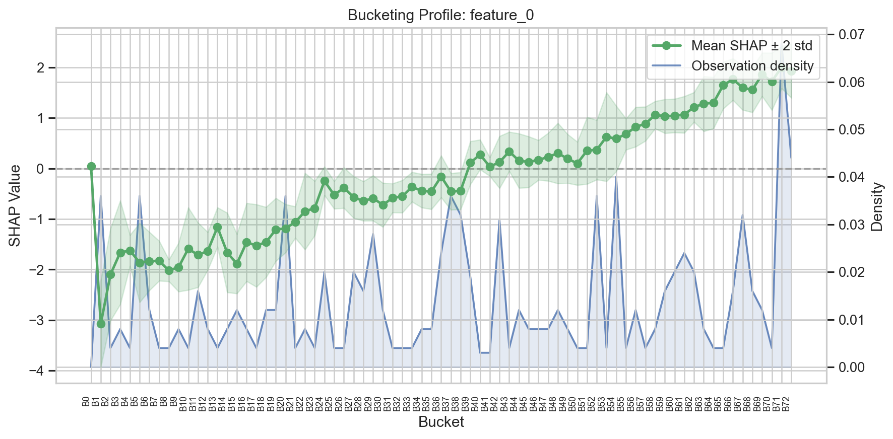
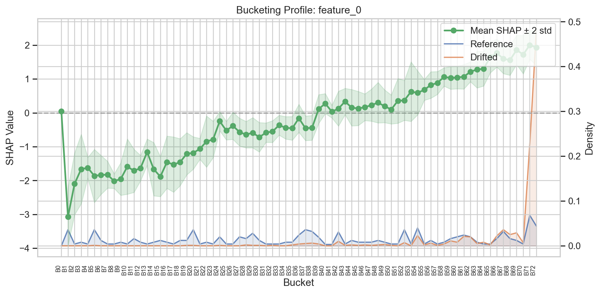
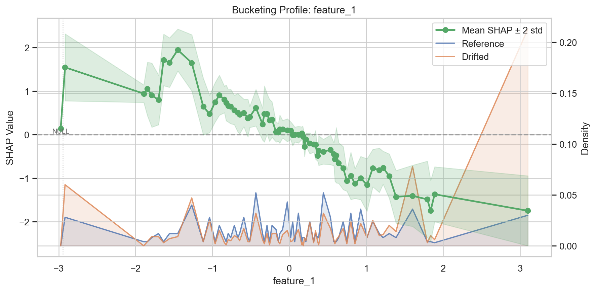
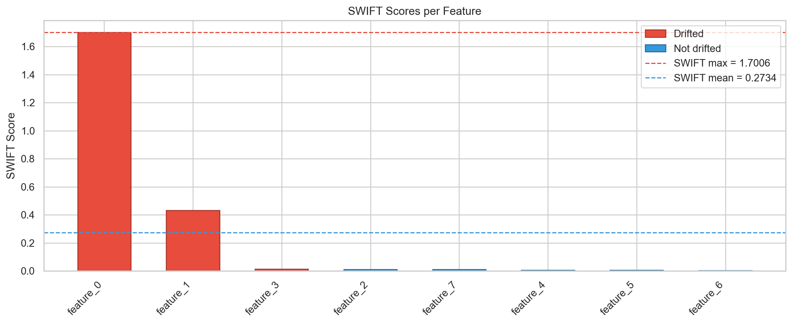
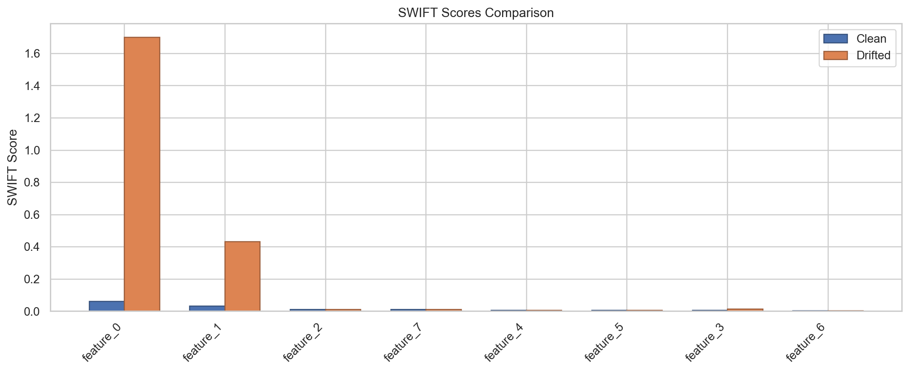

Visualization¶
SWIFT provides two main visualization methods, both accessible directly from the SWIFTMonitor instance. All plots return (Figure, Axes) tuples for further customization.
Bucket Profile¶
The bucket profile visualizes how a feature's SHAP response and observation density are distributed across buckets.
Basic Usage¶

The plot shows:
- Left y-axis: Mean SHAP value per bucket (line + markers) with a shaded band showing mean +/- 2 standard deviations
- Right y-axis: Observation density (fraction of samples in each bucket)
- X-axis: Bucket intervals
- Dashed grey line: SHAP = 0 reference
Comparing Distributions¶
Pass X_compare to overlay a second distribution (e.g., monitoring vs. reference):
fig, ax = monitor.plot_buckets(
"feature_0",
X_compare=X_drifted,
labels=("Reference", "Drifted"),
)

Custom Density Source¶
By default, the density is computed from the reference data used during fit(). Pass X to use a different data source:
Natural X-axis¶
For a more interpretable x-axis, use x_axis="natural" to show bucket midpoints on the feature-value scale instead of bucket indices:

When there are more than 20 buckets, the default mode automatically switches to compact labels (B0, B1, ...) for readability.
SWIFT Score Plot¶
The SWIFT score plot provides an overview of drift across all features.
Single Result¶

Shows:
- Bars: One per feature, colored red (drifted) or blue (not drifted)
- Horizontal lines: SWIFT max, SWIFT mean, and optional threshold
Comparing Two Results¶
fig, ax = monitor.plot_swift_scores(
result_clean,
result_compare=result_drifted,
labels=("Clean", "Drifted"),
)

Shows grouped side-by-side bars with neutral coloring for direct comparison.
Customization¶
Both methods return matplotlib (Figure, Axes) tuples, so you can customize the plots further:
fig, ax = monitor.plot_swift_scores(result)
ax.set_title("My Custom Title")
ax.set_ylabel("SWIFT Score")
fig.savefig("swift_scores.png", dpi=300, bbox_inches="tight")
Standalone Functions¶
The plotting functions are also available as standalone functions for advanced use:
See the Plotting API Reference for full details.